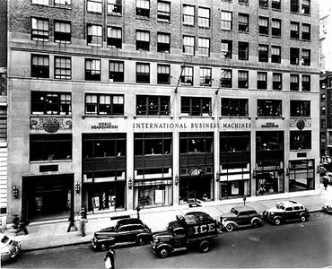

About IBM
HISTORY
International Business Machines (IBM), nicknamed "Big Blue", is a multinational computer technology and IT consulting corporation headquartered in Armonk, New York, United States. IBM originated from the bringing together of several companies that worked to automate routine business transactions, including the first companies to build punched card based data tabulating machines and to build time clocks. In 1911, these companies were amalgamated into the Computing-Tabulating-Recording Company(CTR).Thomas J. Watson (1874-1956) joined the company in 1914 as General Manager and became its President in 1915. In 1924 the company changed its name to "International Business Machines." IBM expanded into electric typewriters and other office machines. Watson was a salesman and concentrated on building a highly motivated, very well paid sales force that could craft solutions for clients unfamiliar with the latest technology. His motto was "THINK". Customers were advised to not "fold, spindle, or mutilate" the cardboard cards.
EARLY AMBITIONS
A merger of three 19th-century companies—the Tabulating Machine Company, the International Time Recording Company and the Computing Scale Company of America—creates the Computing-Tabulating-Recording Company (CTR) on June 16, 1911. CTR is the precursor to IBM. Thomas J. Watson Sr. joins CTR in 1914 and over the next two decades transforms it into a growing leader of innovation and technology and a prototype for the newly emergent multinational corporation.This shift is signaled in 1924, when the company’s name changes to International Business Machines Corporation (IBM). From the beginning, IBM defines itself not by strategies or products—which range from commercial scales to punch card tabulators—but by forward-thinking culture and management practices grounded in core values. By adhering to its vision and values throughout the Depression—providing continued employment, even adding engineers and other staff in order to sustain its production output—IBM is able to play a pivotal role in enabling the U.S. government’s Social Security Act of 1935, “the biggest accounting operation of all time.